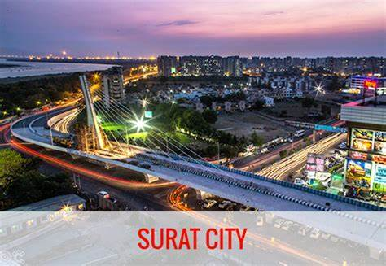

Welcome To Surat...

Diamond City
Surat is a city in the western Indian state of Gujarat. The word Surat literally means face in Gujarati and Hindi. Located on the banks of the river Tapti near its confluence with the Arabian Sea, it used to be a large seaport.
It is now the commercial and economic center in South Gujarat, and one of the largest urban areas of western India. It has well-established diamond and textile industry, and is a major supply centre for apparels and accessories. About 90% of the world's diamonds supply are cut and polished in the city.[12][13][14] It is the second largest city in Gujarat after Ahmedabad and the eighth largest city by population and ninth largest urban agglomeration in India. It is the administrative capital of the Surat district. The city is located 284 kilometres (176 mi) south of the state capital, Gandhinagar; 265 kilometres (165 mi) south of Ahmedabad; and 289 kilometres (180 mi) north of Mumbai. The city centre is located on the Tapti River, close to Arabian Sea.
Surat will be the world's fastest growing city from 2019 to 2035, according to a study conducted by Economic TimesSurat is selected as the first smart IT city in India which is being constituted by the Microsoft CityNext Initiative tied up with IT services majors Tata Consultancy Services and Wipro.[19] Surat has been selected as one of twenty Indian cities to be developed as a smart city under PM Narendra Modi's flagship Smart Cities Mission.
Surat is listed as the second cleanest city of India as of 21 August 2020 according to the Swachh Survekshan 2020 on 20 August.
Surat, famous for its diamond cutting and polishing, is known as the Diamond City of India.
Famous Places in Surat City
- Surat Castle
- Mughal Sarai
- Dutch Garden
- The Tomb of Khudawand Khan
- Sarthana National Park
- Sardar Patel Museum
- Rang Upvan
Surat City Famous Food Item
- Aloo Puri
- Bhajiya
- Undhiyu
- Ghari
- Dhokla
- Ponk Vadas
- Handwa
- Sev Khamani
- Rasawala Khaman Dokla
- Cold Coco Drink
© Copyright Reserved
Go To Main Page